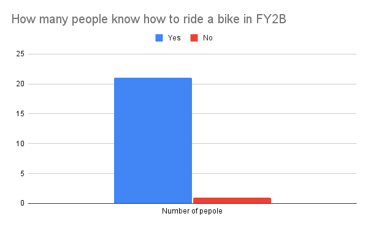
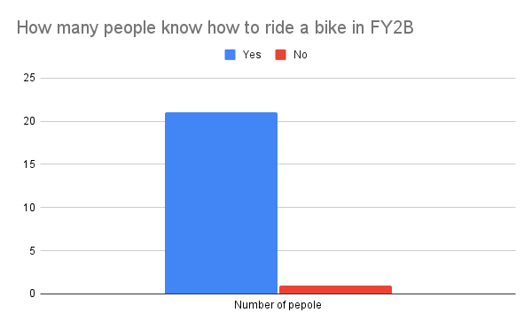

What is this goal?
 UN goal 11 is a goal that links to global warming and it means that all cities should be able to not cause any increse in global warming. This means that you'll need things to reduce carbon dioxide as well as get rid of carbon dioxide.
UN goal 11 is a goal that links to global warming and it means that all cities should be able to not cause any increse in global warming. This means that you'll need things to reduce carbon dioxide as well as get rid of carbon dioxide.
What is already being done?

Pepole are already planting plants in their house to decrese global warming, however, that is not enough as we have not reached net zero yet.
What else can be done?

Pepole can rember to turn off the air conditoning, use a blanket instead of a heater, open the window instead of turn on the AC and more.
Why help?
There is no doubt that global warming is a big issue and needs to be resolved or Earth could suffer horundous consequnces
Works Cited
Images
Make Cities and Human Settlements Inclusive, Safe, Resilient and Sustainable.
Sustainable Development Matters, https://sdmatters.cuhk.edu.hk/sdgs/11-cities/.
Vujić, Katja, and Photography by Max Burkhalter. 6 Tips to Help Your Plants Thrive.
Architectural Digest, 19 Nov. 2019, https://www.architecturaldigest.com/story/best-plant-care-tips.
Why Can't You Just Turn off the Lights?
Your Teen Magazine, 2 Oct. 2020, https://yourteenmag.com/family-life/communication/just-turn-off-the-lights.
Dreamer, Green. 35 Environmental Organizations and Nonprofits for a Sustainable Future (List and Ways You Can Get Involved).
GREEN DREAMER, GREEN DREAMER, 8 Dec. 2020, https://greendreamer.com/journal/environmental-organizations-nonprofits-for-a-sustainable-future.
Infomation
Sorce Code
JQuery Effects - Hide and Show.
Jquery Effects - Hide and Show, https://www.w3schools.com/jquery/jquery_hide_show.asp.
 
